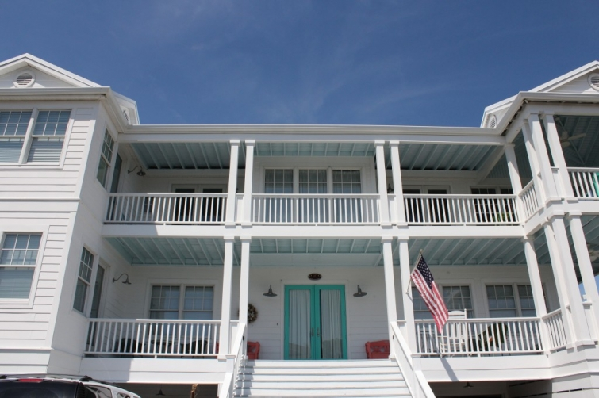
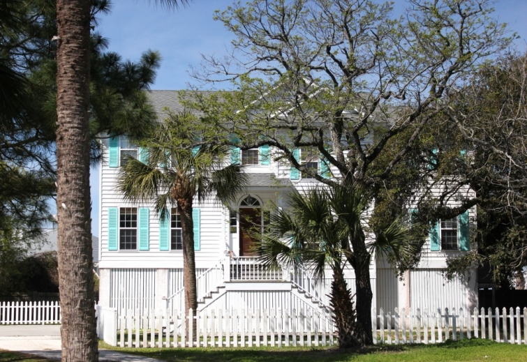

.png)
.PNG)
.PNG)
.PNG)
.PNG)
.PNG)
.JPG)
.JPG)
.PNG)
.PNG)


Another one with that luscious turquoise accent color. It’s a beauty. 🙂
We also saw the lighthouse near the north end of the island…

and historic Fort Screven, located in the same area across from the lighthouse.

Near Officer’s Row (on the same end of the island) was this very interesting looking building.
Now let’s talk about food on the island. Our first lunch was at this little place right on the beach…North Beach Grill. It is not very easy to find because you have to go on the other side of the fort. You can see the lighthouse there in the background.
There is no doubt that you are in an old beach place when you see this interior. During the winter, all those walls are wrapped with plastic on the outside for insulation. The day we were there, they had just taken down all the plastic for the season, and they were opening up the windows for the beach breezes to blow through. In fact, my husband helped them open up the big old windows to attach to the ceiling hooks. Welcome spring!
A hamburger and some horseradish cole slaw for me and a fried fish sandwich with a basket of sweet potato fries for my husband.
For our dinner one night, we dined here at Sundae Cafe. It is located in a strip shopping center beside a gas station and a liquor store. I know that doesn’t sound very promising, but if you go, you MUST eat here.
And this is why: This dish…this pan fried pecan chicken with peach chutney. OH MY GOODNESS. I know you don’t go to the beach for fried chicken, but when you are allergic to shellfish you have to find something else to eat. But, even if I could eat shrimp, I would still get this chicken. It was THAT good…melt in your mouth tender. I would have never thought to pair peach anything with fried chicken, but trust me. It works. The mashed potatoes were also great, and the succotash was divine. You must try this. Okay?? (Can you tell I liked it? 🙂 )
Now let me warn you. Sundae Cafe is small. And it is crowded, but we got lucky lucky lucky. When we arrived (with no reservation) there were 2 seats available they offered us at the end of the bar. (Otherwise it was a wait of an hour and a half. 🙁 ) So we took our seat there (and we don’t drink, but it was fine.) With our backs to the rest of the restaurant, it was actually kind of cozy and private. The lady next to me finished her meal and left, and no one took her seat there, so it wasn’t crowded at the bar at all. We had a wonderfully attentive server in the bartender lady (who actually graduated with someone from our hometown…how is THAT for a small world?!) Bread was served with a yummy garlic parmesan butter dipping sauce before our meal, and we ordered a slice of Snickers pie for dessert that we had for a late night snack at Ebbtide. Their desserts are not to be missed. (I knew they sold out early so being the smart girl that I am, I placed my dessert order when I ordered my meal. 🙂 )
There was another place that I had really wanted to eat while we were there – the Tybee Island Social Club – famous for their fish tacos (and I dearly love fish tacos!)
Unfortunately, the day we had planned to eat there, we pulled into their parking lot around 11:50 for lunch…not a single car in sight. So I thought they were not open for lunch that day. Wrong. They opened at 12, and everyone was parked in the back. We ate somewhere else, and when we came back by, the parking lot out front was full. I will just have to enjoy their fish tacos the next time we visit the island.
And just for fun…The couple who started the Tybee Island Social Club, Sarah Lanier and Kurtis Schumm, were married almost two years ago (this month). If you like reading about weddings (like I do 🙂 ), you can find out all about their fun and pretty beach ceremony here and here.
savannahmagazine.com photo by leeann ritch
Okay..now what were we talking about?..Oh yes, Tybee food! I don’t know if you have been able to tell from my photos, but Tybee Island is not like other beach towns. There are no tall condos on the beach…no outlet malls. Going to Tybee is like stepping back into time to a beach town from decades ago. Case in point: The Sugar Shack.
If you need an ice cream treat, this is one of the places you can go on the island. It began its life 30 years ago as a beach side ice cream stand by four brothers…the oldest of whom was 14 at the time. Today it looks to be stuck a few decades back in a time.
It still has an ice cream menu, but it also serves breakfast, lunch, and dinner, and it is still run by two of the brothers – along with help from their mom.
That’s my generous serving of a coffee ice cream cone being held by my husband for me. He had a milkshake. The service was good for us, but I understand the lines are slow and out the door in summer.
The Sugar Shack isn’t the only place for breakfast on the little island (nor is it the only place with a line.) Here’s the most popular place, and they have a line of folks wrapped around the building every single day – The Breakfast Club. It’s not much to look at, but the breakfasts there are great.

Here is part of their menu so you can get an idea of what they serve.
And here are a few more places for your dining pleasure. 🙂
And now we can talk about shopping. With all the house gawking and eating, we did not do a great deal of shopping. There is a typical beach-town downtown area.
But there was one shop I really enjoyed for shopping…Seaside Sisters.
They carried many (all?) of Mary Kay Andrews’ books in this cute store.
And Mary Kay has her own booth there full of vintage goodies.
Do you spy a little iron in front of the yellow toy kitchen there on the bottom shelf? She was just too sweet to resist.
I brought her home to live here. 🙂 And I am hoping that one day we will have a laundry area where she can be used for decoration. In the meantime, I am happy to have a reminder of our fun trip to Tybee and Mary Kay Andrew’s house.
So who won the Mary Kay Andrews’ books? you might ask. There were 256 entries, and the lucky comment was …
and it belonged to this comment:
Congratulations Paula! I will be getting in touch with you to mail your prizes to you very soon. And thank you to all of you who left comments on the posts and to those of you who shared the house love by pinning the photos on your Pinterest boards. I appreciate it so very much!
So let’s say goodbye to Tybee Island for a little while and turn our attention to Easter Sunday. We have a big outside lunch planned here for the day, but rain is on its way again. (Have I ever had a party when it didn’t rain???) I hope your weekend is full of blessings. Do you have plans?
We’d love to hear!


.PNG)
Kelly, again thanks so much for the birthday surprise, I’ m still celebrating the big “60” one week later. As you know – I am a devoted fan and think the world of your blog. What more can I say, it was serendipity that I’d be the winner on the 13th! Someday I will visit Tybee along with so many of the other wonderful places you take us to via this amazing blog.
———————————————————————–
You are more than welcome Paula! I hope you will enjoy it, and I also hope you get to visit Tybee one day soon. It is a precious little slice of summertime heaven. 🙂
Kelly
What perfect timing on your post. We are headed to Tybee the second week of May – to stay in another of the Mermaid Cottages. Looking forward to checking out your recommendations!
Great post! My family can’t wait to try out all these places in Tybee this August! Thanks, Kelly for all of the pictures and ideas. Happy Easter!
Looks like your trip was not only very visually stimulating, but oh so delectable. You have to love casual, easy beach town living, if only for a short trip. Looks like you had a wonderful time. Thanks for the share of life in the south. I hope the rain holds off for your Easter celebration. We are suppose to have sun and possibly 70 degrees tomorrow. I’m so happy to finally have some wonderful spring days. Well, no cooking here, as my husband is taking the whole family out for Easter brunch. It is at a charming Garden/Event venue made from an old brick warehouse. We did Mothers Day there last year and enjoyed it so much. Have a Happy Easter with your loved ones Kelly. Will there be an Easter post of your holiday décor? Hope so…
Debra
The Sundae Cafe also has great fish tacos! Just like you don’t think of chicken at the beach, you don’t usually think of pizza, either. HucaPoos pizza ( on hwy. 80 in the Tybee Oaks shopping area) is a real “dive joint”, but you can eat outside. Their pizza is some of the best I have ever had and is reasonably prices.
Kelly, what a wonderful “trip” down memory lane for me. Sandy and I LOVE both Savannah and Tybee and go several times a year … usually just for fun. Sometimes just for the day; other times for several. You highlighted a number of our favorite spots, too. Next time, try the Sundae Cafe during the day. Totally different experience.
Keep writing!
Kelly,
WE will be going to my In-Laws Saturday to celebrate Easter and then to my parents Lake house for Easter Sunday. I am looking forward to both. My Mom always does traditional Easter meals but my Mother-in-Law never does. I am looking forward to the desserts the most. Mom is making strawberry pie at my request instead of angel food cake with green coconut grass and candy eggs. My Mother-in Law is making homemade sugar cookies! Have a happy and rain free Easter!
As always…wonderful pictures and suggestions. We have been to Savannah many times but never to Tybee (shame on us). Hope to get there some day. I love that scale you showed in MKA items, wish I knew how much it was. Have a wonderful Easter.
i was hoping you included Tybee Social Club in your list and was so glad to see that you did! last time we went to savannah/tybee island my sweet friend amanda of the fabulous blog dixie delights recommended tybee social club and their fish tacos….i have yet to find any that can hold a candle to the ones there. didn’t you love the way that place looked? when we were there it was in february so the plastic tarps were still up in places. i know what you mean about parking…we were lucky enough to find one out front but had a hard time at first finding the place…it was kind of hidden (small).
hope you all have a wonderful blessed easter with your family. all kids and grandkids will be here so i better get off the computer and go to the grocery store!
Thanks for taking us along on your vacation Kelly! Those Tybee Island people need to tap you to work for their Department of Tourism. Ha! The wonderful cottages sold me, but the food put me over the top. Everything sounded so delicious.
I hope you have a wonderful Easter! I’ll be hosting dinner at my house too.
Oh how I love Tybee Island and I hope the secret does not get out!! We have been eating ice cream at the Sugar Shack since my kids were little. And Sundae Cafe….so delish. I do wish it would move to a place where the parking is better. My sis in law’s beach house is near the light house. Actually her home is part of old Fort Screven. In many of our family pictures made at her house, the lighthouse is in the background. I think MK Andrews would love their place because it is really retro and old time beach house. Next time I am at Tybee I hope to get by Seaside Sisters. Of course, I will have to bring home a special treasure like you did Kelly!! Looking forward to seeing your Easter Tablescape….I am sure it will be charming.
Oh shoot, I didn’t win…..but I am on page 200 of “Beach Rental” that I checked out from the library! Love all the food pics…remember I’m the one who loves it when skinny people like you enjoy a good meal! I am hosting Easter meal at our house for family and two best friends…one of which had a birthday yesterday so dessert will be cake. I am kinda’ cheating because I am buying a heavenly ham but I will make the rest from scratch.I debated making your raspberry ribbon salad but decided on a strawberry salad instead as we have so many strawberry lovers. I hope you and your family have a wonderful Easter!!! Oh and I am happy you bought your vintage iron….baby steps to thrifting!!
Kelly, thank you for sharing Tybee Island with us. I feel as if I’ve had a mini-vacation. I do know for sure that coffee ice cream looks so good–I could lick it right now before it starts to melt–hmm-mm-m dee-lish!
Kelly, thanks so much for all the wonderful Tybee Beach posts. Just by reading them I feel like I had a vacation without the hassle of packing, traveling, or added expense. I’m loving this vicarious vacation experience!:-)
One of my favorite pictures is the white clapboard church–now that’s my idea of a great wedding venue. So romantic!
As for the vintage booth, I think I spy a duplicate of my first grade lunch box hiding in there, and my mother had an iron similar to the one you brought home. I am just telling myself that I’m not getting old–I’m vintage! Have a blessed Easter weekend!
Almost missed this latest post— glad I saw it— but now I am soo wanting coffee ice cream!! At midnight!:) And that little iron– I had a pretend one but it didn’t heat. As a young girl, I loved to iron and was taught how by my grandmother doing hankies and pillowcases. We had sprinkling bottles made out of Pepsi bottles and the ironing had to be sprinkled down the night before and rolled up so it would iron up nicely. Remember, wash on Monday, iron onTuesday—:) Sweet memories! Big plans for Sunday, with an old friend coming for Easter dinner– have known her for 50+ years. Have some special activities planned— I dyed eggs tonight (found dye -able ones that look like real eggs) so I gathered special craft items to use, painted black chalk ones from WS to use as place settings, a candy -off which the girl’s find the most disgusting holiday candies to try (yuck) and a really fun jousting peeps game— 2 peeps with a toothpick as a sword placed in the microwave and — well, let’s just say it is the funniest thing ever!! We’ve never grown up!! Hope you have a wonderful family time on this Holiest of all holidays. Peace and love to all.
We just got home from a …AHEM….vacation in Fl. NOT the vacatin we had planned or hoped for. However we made the best of it and are now home as of today. Loved seeing Tybee! I will put that on my list of places to go!
———————————————————————
I’m sorry it wasn’t the vacation you had planned, but at least you were able to go somewhere Pinky. 🙂 Do add Tybee to your list of places to visit. (And when you go, eat some fish tacos for me, please.) ha ha.
Thanks for reading and leaving your comment.
Kelly
The Sundae Café has the BEST fish tacos!!! Seaside sister’s was a great place to shop! You hit all the best stops at Tybee!!! What a great post!
———————————————————————-
Andrea, as much as I love fish tacos, I don’t think I would choose them over that chicken dish. LOL…maybe the tacos for lunch and go back at dinner for the chicken! I am glad to know I hit the best places.
Kelly